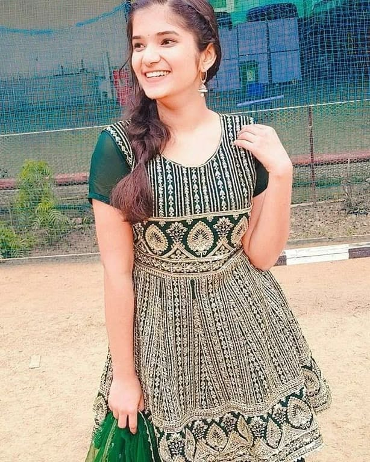
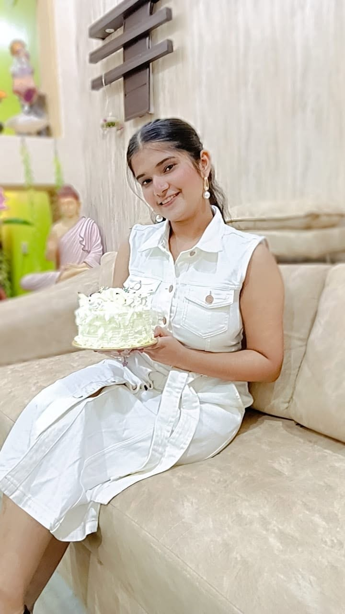
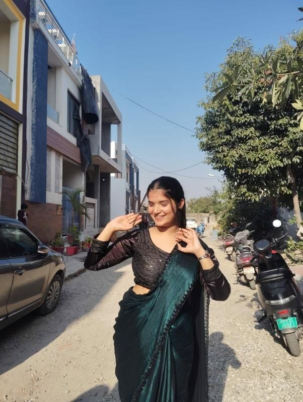
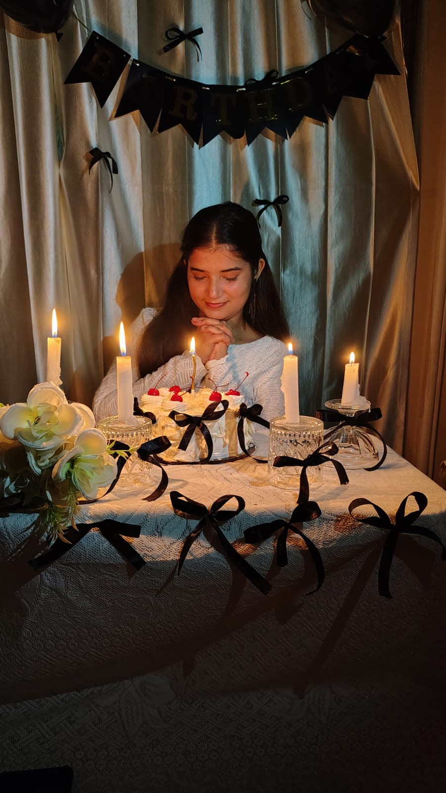
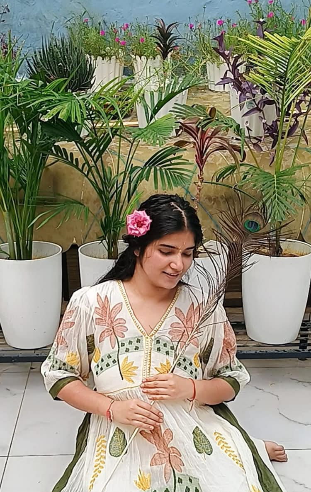
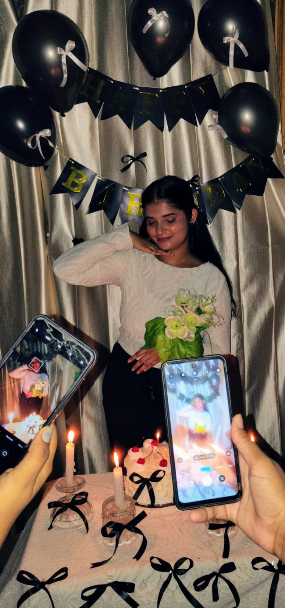
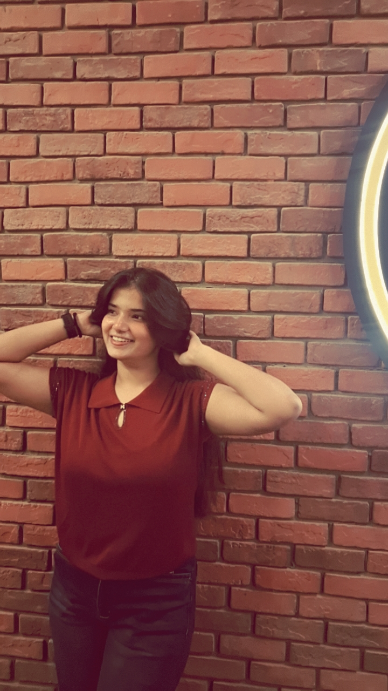
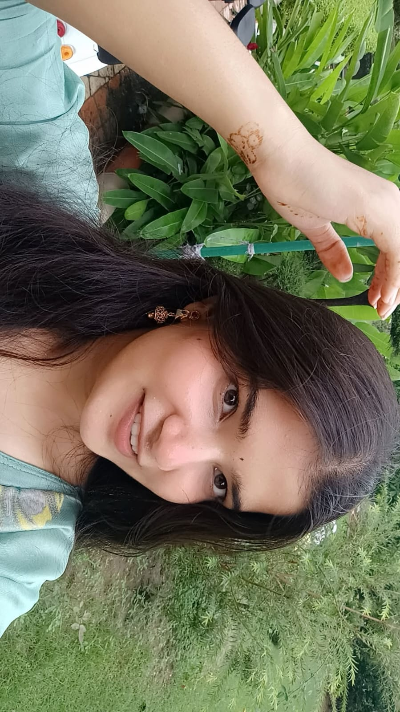
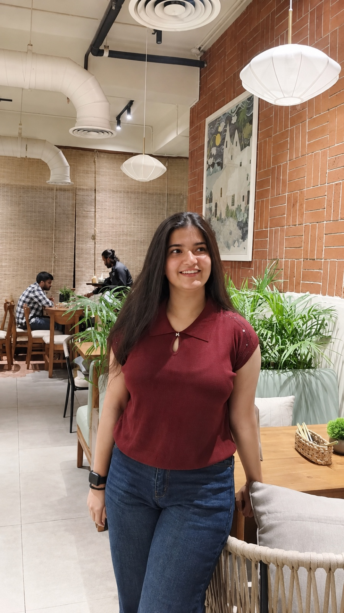
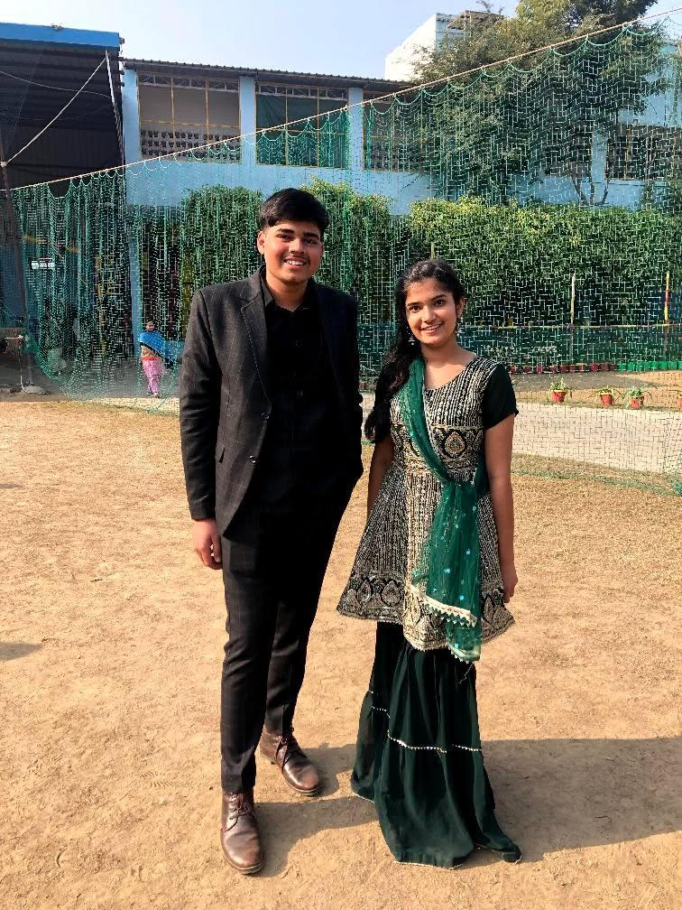

Don't just close this after the first screen.
I made this because a normal “Happy Birthday ❤️” felt way too small.
I didn't know how many conversations, laughs, memories and moments were waiting for us. I just knew there was something about you that I wanted to keep discovering.
14 January 2022. The date our relationship officially began — and one of those dates I don't think I'll ever look at like a normal day.
Pick the answer you think I'd choose.
Your laugh when something genuinely gets you. The way your eyes change when you're excited. The expressions you make without even thinking. The tiny details that someone else might miss but that I somehow remember.
And that little mark on your face? I don't know why, but somewhere along the way it became one of those tiny details that feels unmistakably you to me.
Tap any photo. I wanted these to feel less like a gallery and more like little pieces of a story.










Not because it's perfect. Because it's ours.
Among all these pictures of you, I wanted one picture where the story isn't just about how beautiful a moment looks — it's about the two people who were there.
And yes, I am keeping this one here on purpose. ❤️
The date that quietly started everything.
The day our relationship began, and the date that gave this story another meaning.
Conversations, jokes, memories, silly things, difficult days, good days — all the ordinary pieces that make something real.
Another year of you. Another reason for me to be grateful that our paths crossed.
Nandini, I hope you always know how deeply loved, valued and appreciated you are.
Thank you for being part of my life, for every memory we've made, and for all the little moments that became something much bigger.
If I could choose one thing for you today, I'd choose a year full of reasons to smile.
Happy Birthday, meri favourite person.